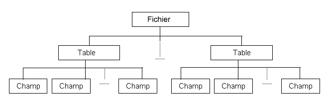

Le rôle du dictionnaire consiste à centraliser les déclarations de tous les objets utilisés dans une application. Un objet, c'est par exemple un fichier, une table, un champ.
Les objets sont structurés de manière arborescente. Par exemple, dans la structure fichier-table-champs, le fichier est l'objet de plus haut niveau. Viennent ensuite les tables du fichier (sous HARMONY, un fichier peut en effet regrouper plusieurs tables différentes) puis les champs des tables.

Tous les outils d'Harmony, éditeurs, compilateurs, etc. accèdent à un ou plusieurs dictionnaires pour connaître la structure des données de l'application.
Le dictionnaire contient également la définition des index des différentes tables ainsi que les liens entre les différentes tables.
|
Attention, le dictionnaire est un outil descriptif. En aucun cas, il ne modifie les fichiers physiques. Si par exemple, vous modifiez la taille d'un champ dans le dictionnaire, il faudra passer une "moulinette" sur les fichiers. Voir Moulinettes de conversion des fichiers . Xwin permet de créer des fichiers et d’en modifier la description des clés (index). |